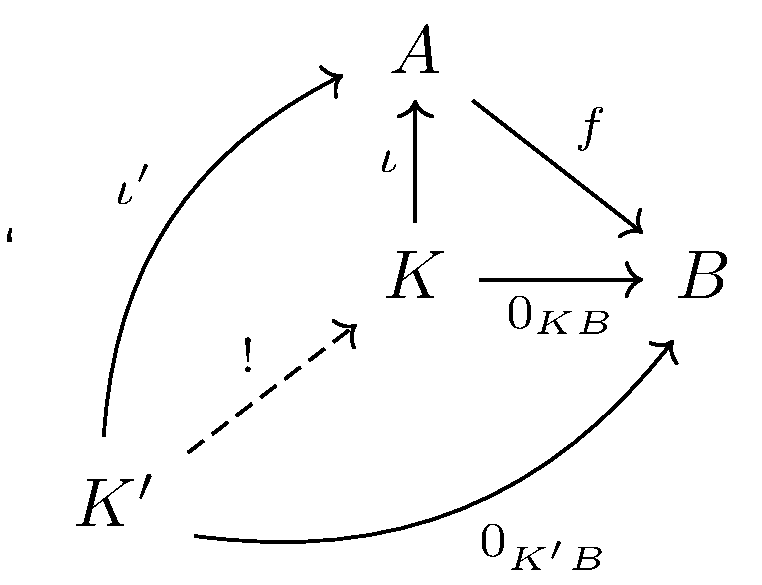

October 28th
Today I learned an equivalent (Vakil's) definition of a kernel in a category with $0$ objects. Basically, if we have a $0$ object, then we can define our zero morphisms $0_{A0}$ and $0_{0A}$ as the only possible morphisms, for any object $A.$ But this kind of locks us into defining our zero morphism $0_{AB}$ by composing\[A\stackrel{0_{A0}}\longrightarrow 0\stackrel{0_{0B}}\longrightarrow B.\]Very quickly, for any morphism $C\to A,$ we do indeed have $0_{CB}$ after composing as $C\to A\to 0\to B,$ for $C\to A\to 0$ must be the unique mapping $C\to 0,$ so we had $C\to 0\to B$ all along. For the same reason, for any morphism $B\to C,$ the fact that we must have $0\to B\to C$ equal to $0\to C$ implies that the composite $A\to 0\to B\to C$ was $A\to 0\to C$ all along.
With this $0$ object in mind, we can define our kernel of a mapping $f:A\to B$ to be an object $K$ with a mapping $\iota:K\to A$ such that $\iota\circ f=0_{K0}$ and is universal with respect to this property. This is really the same diagram as we had last time, but having a $0$ object makes the definition must more natural. I'll repaste the diagram for completeness.
